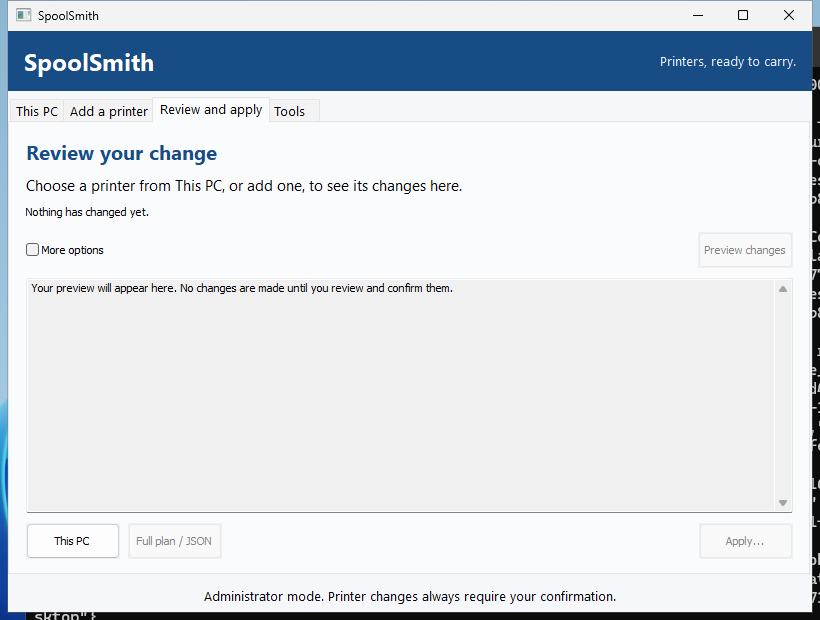
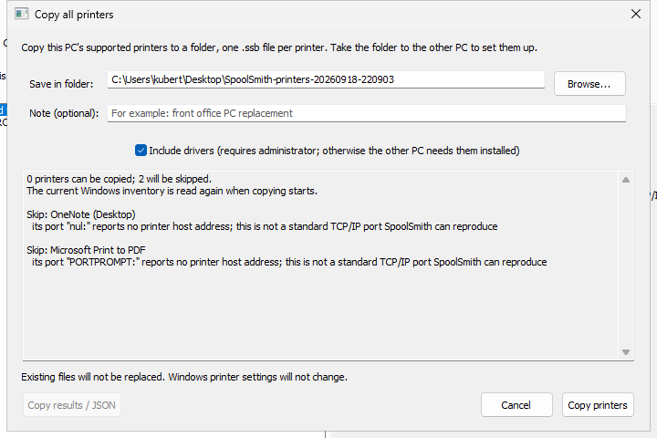

Workflow
Copy a printer to another PC
Someone needs a printer, and someone two desks over already has it working. Copy it into a printer file, carry the file over, and double-click it. The driver comes along whenever it can.
In the desktop app#
- On the PC that already prints, open This PC. Select the printer (or several, or Ctrl+A for all) and choose Copy 1 printer... or Copy N printers... One printer saves a
.ssb; several save one.zipset. - Move the file to the other PC however you like: a share, a USB stick, a chat. You can also press Ctrl+C in the app and paste the printer files straight into a folder.
- On the other PC, double-click the file. Dropping it on the window, pasting it with Ctrl+V, or Add a printer → Open a printer file... works too.
- Check the plan on the apply sheet and confirm once. If SpoolSmith isn't elevated, the button reads Install as administrator...; Windows asks for permission and the plan is checked again before you confirm.

When it finishes, the sheet shows each step's result. Copy notes for the ticket puts a plain-text summary on the clipboard.
On the command line#
On the PC that already prints, as administrator.\spoolsmith.exe printers
.\spoolsmith.exe copy "Accounting" --out accounting.ssb.\spoolsmith.exe apply accounting.ssb --dry-run
.\spoolsmith.exe apply accounting.ssbprinters lists every queue and marks the ones that can't be copied with ! and the reason. It reads Windows' own Get-Printer and Get-PrinterPort, changes nothing, and needs no elevation. Add --copyable to hide the rest.
With copy, leave out the queue name to pick from a numbered list, and leave out --out to name the file after the queue. (copy "Accounting" accounting.ssb, with the file name as a second argument, also works.) In a script with no terminal, copy without a queue name fails and asks you to name one. It never picks for you.
The driver comes along#
Every copy tries to export the printer's driver package from the Windows driver store into the file, so the other PC doesn't need it beforehand. That export needs administrator rights. When it can't happen, because you're not elevated, the export failed, or the package is bigger than the 1 GiB limit, the copy still succeeds with the settings only and says why.
--settings-only(or clearing the desktop's Include the driver where possible box) always leaves the driver out. Use it when the other PC should use a driver you install yourself.- Inbox and Windows Update drivers have no driver-store package to export. The other PC gets them the same way this one did.
--include-driverfrom older versions is accepted and ignored, with a note.
Copy every printer at once#
.\spoolsmith.exe copy --all --out printers.zipThis writes one printer set: a plain .zip holding one .ssb per printer, each carrying its driver where possible. Leave out --out to get SpoolSmith-printers-<date>-<time>.zip in the current folder.
- Printers that can't be copied are skipped with a reason, and one failure doesn't stop the rest.
- Duplicate names get
-2,-3suffixes. An existing set file is never replaced. - Stopping the copy (Ctrl+C on the CLI, or the stop control in the desktop) saves no set.
- The CLI exits zero if at least one printer was saved. Check
failedandskippedin its JSON. The desktop's Copy results gives you a plain-text report.

Applying a set#
.\spoolsmith.exe bundle inspect printers.zip
.\spoolsmith.exe apply printers.zip
.\spoolsmith.exe apply printers.zip --member AccountingEvery printer in a set gets its own plan and its own confirmation, exactly as if its .ssb were applied alone. One confirmation never covers several printers. --member picks one by file name. In the desktop, opening a set shows its printers so you can pick them one at a time.
What apply checks#
Before showing the plan, apply probes the printer and compares the model it reports with what was captured. Three outcomes are possible:
- It matches. The plan goes ahead.
- It reports a different model. Setup stops. The address now belongs to a different device.
- It doesn't answer, or can't confirm its identity. Setup falls back to offline setup from the saved settings, and the plan says so before you confirm.
To skip the check from the start, for example when preparing a PC before a site visit, use --offline (or More options → Offline setup on the sheet). Offline success means the queue is configured; it doesn't prove the printer is reachable or that printing works.
Applying the same file again is safe: matching settings are reported as unchanged. To change an existing queue to match the file, use apply --update (More options → Update an existing queue).
Driver signatures and trusted publishers#
A carried driver is installed only if every file matches its SHA-256 in the manifest and Windows validates the driver catalog's signature when pnputil stages it. If the signature is valid but Windows doesn't yet trust that publisher for driver installs, apply adds that exact signer certificate to LocalMachine\TrustedPublisher first. That step is in the plan you confirm. The certificate always comes from a catalog Windows has validated, never from the file itself, and nothing is added to the Root store.
The hashes detect corruption and casual edits; they aren't a signature. Windows' signature check is the real gate. Use --settings-only when you'd rather install drivers yourself.
Roll one reviewed plan out to many PCs#
.\spoolsmith.exe apply accounting.ssb --dry-run
# ... Reviewed plan fingerprint: 536445b1f7c20f84...
.\spoolsmith.exe apply accounting.ssb --plan-hash 536445b1f7c20f84...Any PC that would compute a different plan stops instead of making changes, and shows both fingerprints. This is deliberately stricter than --yes, which accepts whatever plan the PC computes. A fingerprint covers one printer, so with a set, pair --plan-hash with --member.
Which printers can be copied#
| Queue type | What happens |
|---|---|
| RAW TCP 9100 by IP | Copied as-is. |
| RAW TCP 9100 by hostname | Saved as the hostname's current IP, with a warning that DNS or DHCP changes can break it. |
| WSD | Copied when its device ID and IP can be verified (the printer must be reachable). SpoolSmith prefers RAW TCP/IP with the source driver, or an unambiguous existing RAW mapping at that IP. If the source uses Microsoft's IPP Class Driver and no RAW mapping is known, it saves a verified IPP endpoint instead. |
| USB | Copied to a .usb.ssb. Applying it can prepare the driver before the printer is plugged in. Apply again after Windows creates the USB queue to map it; pick a differently named queue in the sheet or with --usb-queue <name>. |
| LPR, non-9100 ports, IPPS-only, virtual printers | Not copied. printers says why. |
When a printer changes address#
If the printer moved or the subnet was renumbered, re-point the queue instead of rebuilding it, so users keep the printer they already pick:
.\spoolsmith.exe repoint "Accounting" 192.168.1.75 --dry-run
.\spoolsmith.exe repoint "Accounting" 192.168.1.75The name and driver stay the same, and the old port stays in place in case another queue uses it. In the desktop, select the printer on This PC and choose Change address...
Look inside a file#
.\spoolsmith.exe bundle inspect accounting.ssbThis shows the printer, address, driver, the PC and time it was copied from, and whether every payload file matches its hash, without contacting the printer or touching Windows. The desktop's More → Inspect does the same. A .ssb holds manifest.json (settings and evidence, never commands) and, when a driver was included, payload/ with every file listed by size and SHA-256. Entries with unsafe paths are rejected before anything is written.
Something wrong or unclear? Open an issue or edit this page.